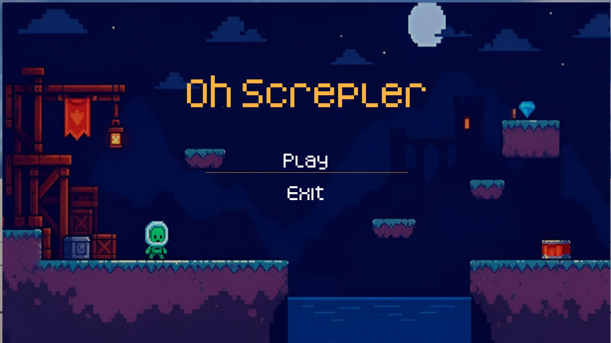
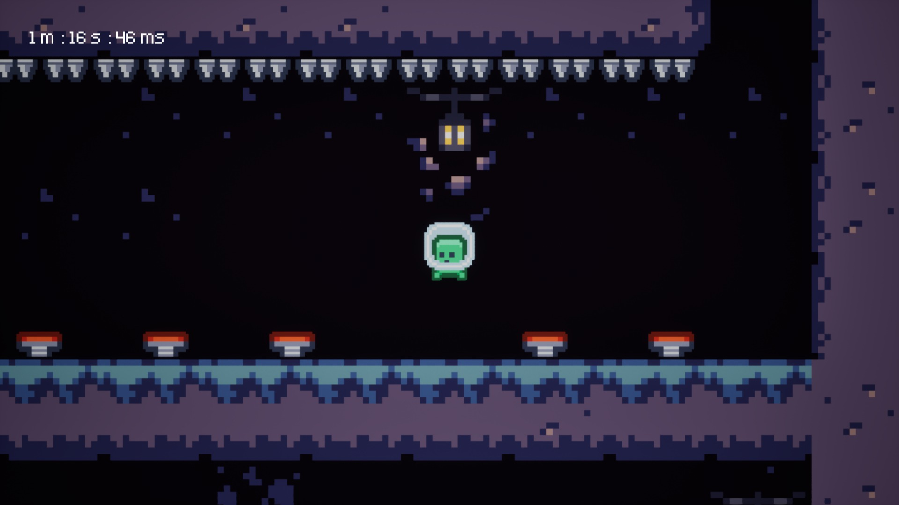
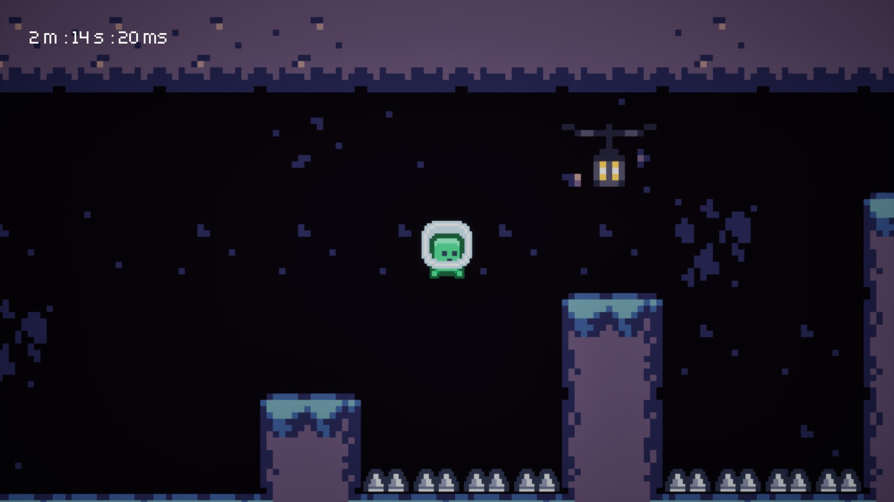

Experience
A compact, single-screen 2D platformer in which the entire hazard course can be read at once and each jump must be judged against nearby obstacles.

Description
OhScrepler uses a fixed, one-screen level rather than a long scrolling route. The player must navigate its platforms, hazards, and obstacles while keeping track of the whole arrangement. Pixel-art scenery gives the level a clear visual language for safe ground and dangerous areas.
The project concentrates on a complete small platforming loop: character control, a designed level, hazards, and the conditions that make an attempt succeed or fail. Its saved documentation identifies the playable version as a beta, so the overview describes that scope without presenting a larger campaign.

Detailed features
One-screen level design
The full challenge is contained in a single visible space. The player can plan a route by comparing platforms and hazards across the screen instead of discovering a scrolling level a little at a time.

Platforming and hazards
Movement, jumps, obstacles, and dangerous surfaces make timing and landing position central to the experience. The level design brings those simple interactions together into a compact challenge.
Blueprint-driven game loop
The game uses Unreal Engine Blueprint visual scripting for its gameplay. Pixel-art assets and a small level keep attention on the movement and hazard systems.
Build summary
This is an Unreal Engine 2D project built with Blueprint visual scripting. The documented core mechanics, map, and playable game loop are implemented. C++ is described as future work rather than part of this build.
- Technology
- Unreal Engine
- Scope
- Unreal project
- Presentation
- 1080p footage unavailable
Feature video
1080p project video unavailable
A verified recording of this project at the requested resolution has not been published.